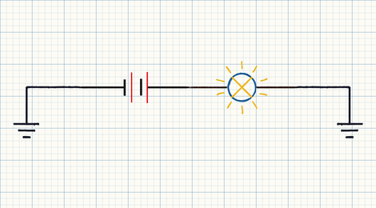
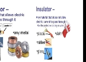
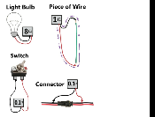
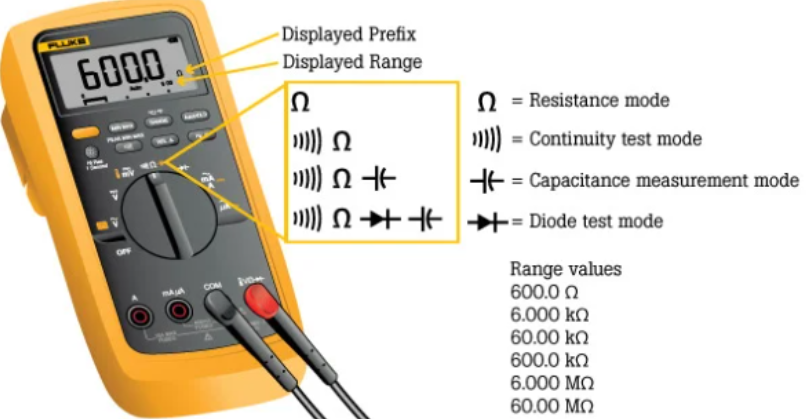

Resistance
- Understand what the limitations are and how to read your ohmmeter. The ohmmeter is almost never the best tool.
- Everything has resistance and resistance is affected by physical properties like temperature and wire diameter. Measure resistance of some typical components.
- Ohm's Law: Series resistance adds together and decreases current flow.
- Ohm's Law: Parallel resistance adds additional paths for current to flow, therefore, decreasing overall resistance and increasing overall current flow.
- Resistance is the load in our circuit and ideally there is only one load.
- Voltage comes from the source, our circuit wires make up the path, and, hopefully, resistance is the load or electrical device in our circuits. Generally, our circuits will be designed to have one device, or load, and that load should constitute all the resistance in the circuit.
- The load in a circuit, aside from using the voltage to create some type of work, is responsible for regulating the circuit's current flow.
- Resistance is opposition to current flow
- Resistance failures usually come from too much resistance in parts of our circuits other than the load or, sometimes, the resistance of the load itself becomes incorrect.
Resistance is the opposition to current flow. In a series circuit, all the resistance adds together.

Keep this simple. Use the most important variation of Ohm's Law.
Resistance is indirectly related to current. As resistance goes up, current decreases. When resistance decreases, current increases.
As resistance goes up, current decreases. When resistance decreases, current increases.
Basically, everything has some resistance. Materials with little resistance are conductors. Materials with lots of resistance are insulators. We need resistance in our circuits to control current flow.
A circuit with no resistance would have more current than the conductors (path) or source could handle and would be referred to as a short. With no resistance, current will increase to damaging levels.
A short-to-ground has basically no resistance. Current is very high.

Any material that allows electric current to pass through it. Examples: copper, aluminum, steel.
Any material that does not allow electric current to pass through it. The higher the resistance, the better the insulator. Examples: glass, rubber, vinyl.
Save your ohmmeter for circuit testing scenarios. An ohmmeter cannot be used on a circuit that has current flowing, or voltage applied. It's best to remove a component from the circuit to complete a resistance test.
Resistance is affected by temperature, length, diameter, and material composition. Usually, resistance increases with component heat. A wire's resistance increases with its length.

| Light Bulb | ~8Ω |
| Piece of Wire | ~0.1Ω |
| Switch | ~0.1Ω |
| Connector | ~0.1Ω |
Values approximate, read off the source diagram. A good wire, switch, or connector should read close to 0Ω — a healthy low-resistance connection. The light bulb's filament is the deliberate load in the circuit.

Meter Settings
- Resistance (Ohms) - Greek letter Omega (Ω)
- Continuity - Sounds a beeper to indicate continuity
- Diode - Save this for the next class.
Meter Counts
Resistance is where we generally notice the meter 'counts' specification of a meter. The meter shown here is a 6000-count meter. While making a reading, every time the meter reaches 6000, it will change range by moving the decimal place and potentially changing the resistance scale.
OL
Meter displays the letters 'O' and 'L'. This can mean Open Loop or Overload. Some meters display '1'. This is an out-of-range result usually because a circuit has no continuity.
Resistance is measured in Ohms. A meter reading of OL means infinite resistance.